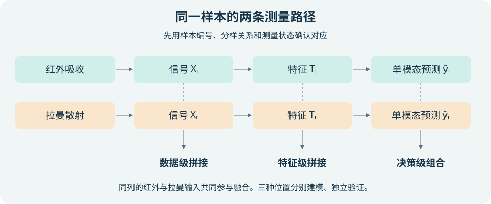
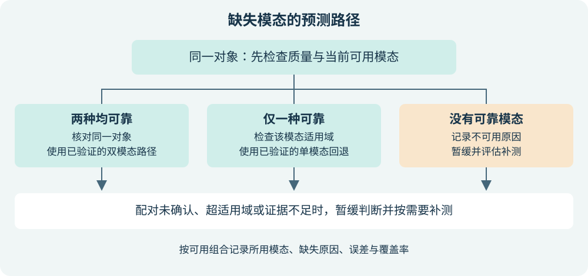

<!doctype html>
<html lang="zh-CN"><meta charset="utf-8"><meta name="viewport" content="width=device-width, initial-scale=1">
<title>G13 多模态分析策略演练</title>
<style>
*{box-sizing:border-box}body{margin:0;background:#eef5f5;color:#173449;font:16px/1.65 "Microsoft YaHei",system-ui,sans-serif}main{max-width:1040px;margin:auto;padding:32px 22px}h1,h2{line-height:1.25}header{border-bottom:3px solid #007e76;margin-bottom:22px}small{color:#35666a}form,section,details{background:white;border:1px solid #cbdede;border-radius:12px;padding:20px;margin:14px 0}.grid{display:grid;grid-template-columns:repeat(auto-fit,minmax(220px,1fr));gap:12px}label,select{display:block}select,button{font:inherit;padding:6px 10px;border:1px solid #537f82;border-radius:6px;background:white;color:inherit}select{width:100%}button{cursor:pointer;margin:4px}button:hover{background:#d4eeeb}output{display:block}li{margin:.35rem 0}.route{padding:10px;background:#e1f4ef;border-left:4px solid #007e76}img{width:100%}summary{cursor:pointer}
</style>
<main><header><small>智能分析化学 · G13</small><h1>红外与拉曼融合策略演练</h1><p>选择分析条件，查看建议及触发规则。此模块用于教学，输出为人工编写的规则解释。</p></header>
<div id="examples"><button type="button" data-case="paired">双模态基线</button><button type="button" data-case="wrong">错配与批次差异</button><button type="button" data-case="fallback">预测时缺拉曼</button><button type="button" data-case="none">无可靠测量</button></div>
<form id="scenario"><div class="grid">
<label>当前对象的可用模态<select name="mode"><option value="both">红外与拉曼</option><option value="ir">只有红外</option><option value="raman">只有拉曼</option><option value="none">两种均不可用</option></select></label>
<label>双模态样本对应关系<select name="pair"><option value="yes">已核实</option><option value="no">未核实或错配</option></select></label>
<label>仪器或批次差异<select name="batch"><option value="no">暂无明显迹象</option><option value="yes">存在或疑似</option></select></label>
<label>独立有效样本量<select name="size"><option value="small">偏少</option><option value="enough">相对充足</option></select></label>
<label>可用信号的噪声<select name="noise"><option value="low">可控</option><option value="high">较强</option></select></label>
<label>训练集合存在模态缺失<select name="train"><option value="no">否</option><option value="yes">是</option></select></label>
<label>预测场景存在模态缺失<select name="predict"><option value="no">否</option><option value="yes">是</option></select></label>
<label>缺失与类别、质量或批次相关<select name="related"><option value="unknown">未知或有迹象</option><option value="no">暂未观察到</option></select></label>
</div></form>
<noscript>请启用浏览器 JavaScript 以使用规则演练。</noscript>
<section aria-labelledby="result"><h2 id="result">建议与验证条件</h2><output id="recommendation" aria-live="polite"></output></section>
<details><summary>查看规则优先级与融合示意</summary><ol><li>无可靠信号时暂缓。</li><li>仅一模态时检查回退模型。若两种模态皆可用，先确认配对，再判断批次风险。</li><li>已配对且无明显批次风险时，按缺失情况、样本量和噪声选择候选融合路径。</li><li>另列训练缺失、预测缺失、选择性缺失和质量风险。所有建议都需要独立验证。</li></ol></details>
<p><a href="../../index.html#/docs/ch13-ir-raman">课程作业正文</a> · <a href="./README.md">文件与运行说明</a></p>
</main>
<script>
function assess(s) {
  const checks = [];
  let route;
  if (s.mode === 'none') {
    route = '暂缓判断';
    checks.push('记录无法测量的原因，按目标相关性和样品稳定性安排补测。');
  } else if (s.mode !== 'both') {
    const name = s.mode === 'ir' ? '红外' : '拉曼';
    route = '检查' + name + '单模态回退';
    checks.push('只有对应模型在现实缺失子群中验证过、信号通过质控且样品在适用域内时才输出。否则暂缓并补测。');
  } else if (s.pair !== 'yes') {
    route = '暂停样本级融合，核对样本对应';
    checks.push('核对编号、时间和分样关系。只有指向同一对象的预测才可组合。');
  } else if (s.batch === 'yes') {
    route = '先评估跨批次偏差';
    checks.push('按批次或仪器留出验证，比较单模态与融合。目标与批次完全重合时，应先补足交叉覆盖。');
  } else if (s.predict === 'yes') {
    route = '比较可用模态决策融合与单模态回退';
    checks.push('在同一对象上组合可靠且已校准的输出，分别验证双模态和单模态路径。');
  } else if (s.size === 'small' || s.noise === 'high') {
    route = '从单模态基线和特征级候选做比较';
    checks.push('用化学相关谱段或训练折拟合的低维特征，检查压缩是否遗漏有用信号。');
  } else {
    route = '将数据级拼接纳入候选比较';
    checks.push('对各模态分别预处理，调节块尺度，与特征级及两种单模态基线在同一留出集比较。');
  }
  if (s.batch === 'yes' && s.mode !== 'none') checks.push('对任何拟使用的模型检查目标仪器、批次与适用域。');
  if (s.noise === 'high' && s.mode !== 'none') checks.push('先检查背景、重复性和峰形。质控未通过时把该模态记为不可用。');
  if (s.train === 'yes') checks.push('训练阶段统计各模式样本量，利用有标签单模态样本。配对和覆盖足够时才尝试缺失掩码或模态 dropout。');
  if (s.predict === 'yes' || s.mode !== 'both') checks.push('预测阶段逐模式报告误差与覆盖率，插补需经留出实测值验证并标记为估计。');
  if (s.related === 'unknown' && (s.train === 'yes' || s.predict === 'yes' || s.mode !== 'both')) checks.push('记录缺失原因，按类别、质量和批次分层验证。随机遮挡不能替代真实缺失评估。');
  return {route, checks};
}

const form = document.querySelector('#scenario');
const output = document.querySelector('#recommendation');
const presets = {
  paired: {mode:'both', pair:'yes', batch:'no', size:'enough', noise:'low', train:'no', predict:'no', related:'no'},
  wrong: {mode:'both', pair:'no', batch:'yes', size:'small', noise:'low', train:'no', predict:'no', related:'unknown'},
  fallback: {mode:'ir', pair:'yes', batch:'no', size:'small', noise:'low', train:'yes', predict:'yes', related:'unknown'},
  none: {mode:'none', pair:'yes', batch:'no', size:'small', noise:'high', train:'no', predict:'yes', related:'unknown'}
};
function render() {
  const result = assess(Object.fromEntries(new FormData(form)));
  const heading = document.createElement('p');
  heading.className = 'route';
  heading.textContent = result.route;
  const list = document.createElement('ol');
  for (const check of result.checks) {
    const item = document.createElement('li');
    item.textContent = check;
    list.append(item);
  }
  output.replaceChildren(heading, list);
}
form.addEventListener('change', render);
form.addEventListener('submit', event => event.preventDefault());
for (const button of document.querySelectorAll('[data-case]')) {
  button.addEventListener('click', () => {
    for (const [key, value] of Object.entries(presets[button.dataset.case])) form.elements[key].value = value;
    render();
  });
}
render();
</script>
</html>
